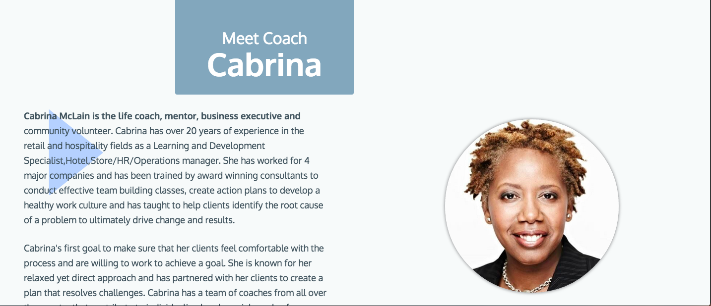

Cabrina, founder and operator of The Experience, was referred to me by my former boss Brian Price, to work with her on a new website and brand image. About a year ago, Cabrina began Life Coach Consulting as a side job, and her client base grew so much that she decided to transition into a full time consultant. This prepresented a great design and development opportunity, as well as a great partnership, as she and I were both working toward transitioning our careers.
Discover and Define
Starting with a phone conversation, I began by getting to know Cabrina and learning about her background and finding out what inspires her. Her services, Life Coaching Consulting, are very up close and personal, so I really wanted to get a feel for her personality. I also learned about her needs and desired outcomes1 of the new website, as well as things she did not want2. In addition, we discussed her target customers3 business model for gaining new customers, which is primarily through referrals of past customers and Sending out promotional emails about her service and links to the website.
1client needs
- Relaxing and Holistic Feel
- Modern Site Layout
- Simplicity
- Logo
2things to avoid
- Feel too clinical or medical
- Too much written content
3customer personas
Pauline is a stay at home mother and community volunteer who is constantly feeling overwhelmed. She enjoys her volunteer work, but is finding her personal life very unfulfilling. Having just turned forty, she feels like she is having a midlife crisis and stuck in a rut. She tried going to a psychologist, but felt uncomfortable with the formalities, and she sought a more personalized service to help her move forward.
Brian is a Marketing Director who juggles many responsibilities in that role, managing a team of sales professional, creating marketing content, and maintaining a budget. Amongst all of his responsibilities, he needs to conduct sales and management training sessions for his employees, but often finds it challenging to fit in with his other duties. He needs help from a third party to assist with preparing training materials and conducting the trainings.
Sherry is an HR Director, who has done well in her career, but over the last couple years hasn't changed positions or been promoted. She is frustrated about her stagnant career life and is finding that her career stress has been affecting her family life negatively. Sherry is overwhelmed by the whole situation and is seeking assistance to find a better work life balance, while still moving forward into new opportunities in her career.
The client's previous site4 was a wordpress created site, that had six different pages outlining the services and company bio. I suggested to her that the written content stay short and concise for each services 1)State what the service does 2) What the customer can expect as an outcome and 3) Why they should sign up. This way, the prospective customer can get right to the bottom of what the services are and how the service will benefit them. I outlined the customer’s journey, based on her business model of referrals and prospecting, pointing out that she had the attention of the user when they are visiting the site and their time on the site was best used to further educate those visitors about her services. She agreed with the content direction and working with her on this content strategy taught me a valuable lesson in -when proposing solutions to a client - always keep your focus on the customer .
4desktop landing page

Design and Develop
I began sketching layout ideas5, envisioning a simple one page layout for easy navigating, reading and a quick review. Most of my sketches were one page layout ideas, but just for fun I tested the waters sketching layouts with separated pages6 - Just to see if anything popped out. Ultimately, I identified two layouts that looked promising (both single page layouts) which worked pretty well. The first option7a was a simple and clean layout that featured the content without distraction, easy to read through and digestible. The second7b was more ambitious in visual design including additionals colors, vertical text, and additional layers emphasizing certain headers. Both were intriguing and I developed both in HTML/CSS to allow some side by side browser comparison.
5one page layout

6separate pages

7amobile picture galler
7bmobile navigation map
Once developed, I became very attached to 9b, but was still unsure which one to move forward with. I decided to shelf the decision between the two layouts and worked on the areas both designs shared in common - the header, logo, and contact section. I wanted to ensure the landing page was warm, inviting, friendly, and humble, yet confident. Working with a number of heading tags, predicated on my interview with Cabrina, I worked through a number of possibilities8 to get a number of options on the table. Reviewing the different tagline designs one by one, I wrote down the pro’s and con’s of each - and decided none of them were appropriate or indicative of the services offered. Consolidating a list9 of pros and cons then guided me to the final outcome - which was a statement to simplicity: “Let’s begin our Journey of Change” - “One session, one discovery, one goal at a time ”. The reasoning for this header was 3 fold - 1) it stated the intention of all the services which is “Change”, and 2) it stated the services to fulfill that objective, being “one session, one discovery, one goal at a time” 3) it mirrored the voice of Cabrina’s personality and the key objective of her service, as discovered through customer interviews. The landing page has a tinted photo to 1) set the calming tone with the subtle blue and 2) to let the message be the center of attention, not the photo.
8aheader interations
8bheader interations
9header iteration thougths and notes
- The capitalized letters were not indicative of The Total Experience and services provided
- while ”Getting a hold of one life” was a key objective, it didn't’ have the warmth of Cabrina’s personality
- the background image was stealing the attention of the header’s message
In finding the right imagery for the site, I looked to the client needs and personas to guide me. I was initially tempted to use photos of Cabrina with a client, but that proved to be too business like and had the connotation of therapy. Also a number of her clients are stay at home mothers, and having business like photos pigeonholed the services to business consulting and sent the wrong message of her services overall. Reminding myself of the variety of different personas and client needs and look holistically, I turned to nature. Nature offers pictures of warmth, serenity and an assembled a palette of colors.
"What colors should we choose to represent and illuminate information? A grand strategy is to use colors found in nature, especially those on the lighter side, such as blues and grays of sky and shadows"
-Edward Tufte
The page is a breeze to get through, and there is not much written content - so instead of having a dedicated section of personalized reviews, I incorporated them as section breaks10, which offered the design both 1) Imagery and testimonial reviews to reinforce the message, and 2) breathing room between the service description sections.
10testimonial section break

I had been sketching logo ideas throughout the process, though having been unsuccessful so far I decided to write down exactly what I wanted the Logo11 to signify and then started over with more structure. With a new direction, I began sketching a lot of shapes, primarily triangles, with the idea of Maslow’s “Hierarchy of Needs” relating to Life Coaching. But, that didn't really make sense or align with the clients services - a triangle insinuates a hierarchy by nature, and that wasn't indicative of The Experience coaching services. In my discussions with the client she emphasized her services are personal and egalitarian. This guided me to the final result12, which is a simple, circular graphic that has a sense of motion, intertwined with another inner circle adding visual motion and signifying partnerships. The circular foundation included a square on the inside, which gives the the graphic a sense of structure, indicative of the structured progressive change The Experience has to offer.
11desired look of the logo
- Stability
- Structure
- Partnership
- Sense of motion
12final logo design

Now it was time to choose the layout to move forward with it - so I went to the user. Reaching out to friends and fellow designers, I put both designs in front of them and learned about their thoughts and interpretations of the different designs. The first one13, was well received, but the second one14 had a number of reservations.
13user feedback
- ”Simple”
- ”Clean"
- ”To the point”
14user feedback
- ”visually nice, but less digestible”
- Confusion about Cabrina’s header15 location
- Confusion about the services graphic, as one appeared selected (it had a different color)16
15header confusion
16differnt color confusion

Overall, it was clear that that while the second one design was more visually intriguing, it was less likely to be read thoroughly - taking away from the key objective. Once again a great learning opportunity -just because it’s pretty doesn't mean anything if it’s not useful.
Deploy and Conclude
The project overall was a grand lesson in multiple perspectives - The client's perspective, my perspective, the personas and the real life user’s perspective. Everyone has different investments, objectives, and goals, which need to be carefully considered individually. In this project, I was too caught up in my desire to have a fancy looking design, and was drawn to a design that didn't fully meet the needs of the client. The client's message was simple and clear, and in the end that’s the message that should resonate in the design. Services, and transferred the DNS from the client’s previous provider, and we were up and running
client review "Sed ut perspiciatis unde omnis iste natus error sit voluptatem accusantium doloremque laudantium, totam rem aperiam, eaque ipsa quae ab illo inventore veritatis et quasi architecto beatae vitae dicta sunt explicabo. Nemo enim ipsam voluptatem quia voluptas sit aspernatur aut odit aut fugit, sed quia consequuntur magni dolores eos qui ratione voluptatem sequi nesciunt."
lessons learned
- Don’t lose focus on the customer and user
- Don’t get too attached to a design
- The user opinion is the designers best tool